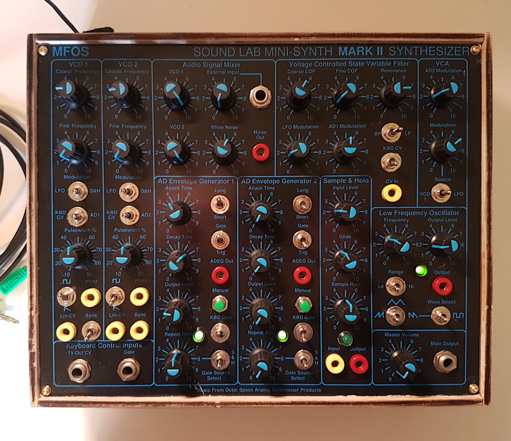

Full analog Ray Wilson’s synth. Descendant of Sound Lab Mini-Synth.

’- Two Musically Accurate VCOs With 1V/Octave Tracking - White Noise Generator - Audio Mixer With External Input - State Variable VCF Low-Pass & Band Pass Response - VCF Doubles As 1V/Oct Tracking Sine Wave Oscillator - VCF Has Multiple Modulation Options - VCA Has Multiple Modulation Options - LFO (Ramp, Saw, Tri and Square) - Two AD/AR Generators - Keyboard Control Inputs - VCOs and VCF Normalized To Keyboard CV Input - AD/AR Generators Normalized To Keyboard Gate Input - Patchable Sample And Hold - Two Repeat Gate Generators for AD/AR Generators - AD/AR Generators Normalized For S&H Triggering
All DB data
- Name: Sound Lab Mini-Synth MkII
- Author: Ray Wilson
- Link: http://musicfromouterspace.com/index.php?MAINTAB=SYNTHDIY&VPW=1910&VPH=871
- Demo: https://www.youtube.com/watch?v=-ijNzWQH0dk
- Picture: ../pics/sound-lab-mini-synth-mkii.jpg
- Description: Full analog Ray Wilson’s synth. Descendant of Sound Lab Mini-Synth.
- Notes: **’- Two Musically Accurate VCOs With 1V/Octave Tracking - White Noise Generator - Audio Mixer With External Input - State Variable VCF Low-Pass & Band Pass Response - VCF Doubles As 1V/Oct Tracking Sine Wave Oscillator - VCF Has Multiple Modulation Options - VCA Has Multiple Modulation Options - LFO (Ramp, Saw, Tri and Square) - Two AD/AR Generators - Keyboard Control Inputs - VCOs and VCF Normalized To Keyboard CV Input - AD/AR Generators Normalized To Keyboard Gate Input - Patchable Sample And Hold - Two Repeat Gate Generators for AD/AR Generators - AD/AR Generators Normalized For S&H Triggering **
- Artifacts: {“Schematic”=>true}{“PCB”=>false}{“BOM”=>true}{“FW”=>false}{“Docs”=>true}{“Enclosure”=>false}
- Tags: AnalogMonophonic
- Level: Advanced
{kind=link}